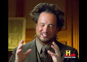

Cresta
 De: La Frikipedia, la enciclopedia extremadamente seria.
De: La Frikipedia, la enciclopedia extremadamente seria.
| De la serie arreglos capilares y vellosos:
|
| Cresta
|
|
|
| Forma
|
Rastrillo roto
|
| Creador
|
un punk que metió los dedos en el enchufe
|
| Época de esplendor
|
Desde que existen los punks
|
| Lucido por
|
los punk (¿cómo estamos, eh?)y Mata
|
| Detalle distintivo
|
te pueden sacar un ojo!
|
| Nivel de frikismo
|
18.356
|
| Popularizado por
|
El Hombre-halcón
|
Dícese de la cosa que tienen los pollos en la cabeza, superhéroes y muchos humanos raritos para que se les confunda con pollos. Las crestas son aparatos con una tecnología más avanzada que una X-BOX 360. Se dice que fueron creadas por Bill Gates y puesto en los pollos macho para que despues lo ayuden a conquistar la granjas del mundo.
Historia
Teorías acerca de su origen
- Teoría de la evolución módica: Fulgencio Crestalis creó este retorcido y sádico peinado una mañana de 1975 luego de varias horas de ensamblaje de su cabello y habiendo usado un par de litros del gel de su peluquería.
Pros: Lo explica ampliamente.
Contras: ¿Sólo usó gel? ¿Esto es la Wikipedia?
- Teoría químico-lunar-magnética: Según esta teoría las células punk tienen una densidad menor a la normal debido a las drogas que los hacen "volar", lo que sumado a la fuerza gravitacional lunar hace que, cada mes, el pelo de los punk crezca unos 3,58 cm. Esto hace posible que los punks y sólo los punks puedan hacer esas crestas.
Pros: Las drogas molan.
Contras: No explica qué sucede con el pelo de los lados de la cabeza. El
profesor Giorgio A. Tsoukalos explicando su teoría
- Teoría Extra-Ancestral: History Channel cree que los extraterrestres les dieron a los antiguos y prehistóricos punks tanto la información necesaria para crearlas como su sentido de la música.
Pros: Esta teoría apareció en la tele.
Contras: Todo lo que Giorgio A. Tsoukalos diga siempre es mentira.
Época de gloria y desaceptación social
Luego de su desconocido origen, las crestas se popularizaron debido a la elección de los superhéroes por estos peinados para luchar contra el crimen, especialmente debido al Hombre-Halcón. Esto ocurrió aproximadamente en el principio de los años 80. Las crestas luego tuvieron un gran avance mundial debido a los bajos precios de los geles y las cremas para el cabello. Las crestas tuvieron una recaída debido a que una latita de gel comenzó valer 500 petacos siendo este peinado solo aceptado por superhéores ricos, pollos y punks grasosos/ricos.
Tipos de crestas
- Cresta de pollo: Testículos rojos que les salen a los pollos en la cabeza, lo que nos indica que son extraterrestres y usan su cresta para comunicarse
Cresta de super heroe y/o abogado
- Cresta de los humanos: No se sabe con que fin se usa esta cresta aunque expertos cientificos soviéticos afirman que es una poderosa arma de los americanos que funciona como bomba de metralla. Al parecer la tendencia crestil se acerca cada vez más al territorio antes comunmente conocido como soviético pero eso sí, sin que lo sepan los rusos. También es usado por las estrellas rock como satélite para recibir información para no equivocarse al tocar o cantar y también es usada por la tribu punk para seguir las ordenes de su líder.
- Cresta de los superhéroes: Es lo que les da poder a los superhéroes y los súper abogados. Es indestructible, tiene un ligero sabor a fresa y brilla en la oscuridad. Esta cresta es buscada por los supervillanos que quieren tener los poderes de un pollo, lo que es totalmente ridículo. También la persiguen los abogados ya que da poder para ganar todos los casos que se le presenten.
Autor(es):
- Fordus
- Frikiman
- Alex2610
- Epikurolibre
- Roms
- Azulejos
- El Sevillano
- Eltarion
- Duhbomb
- Romeo 61
Frikipedia 2005-2016, Licencia
GFDL 1.2 - Extraído por FrikiLeaks